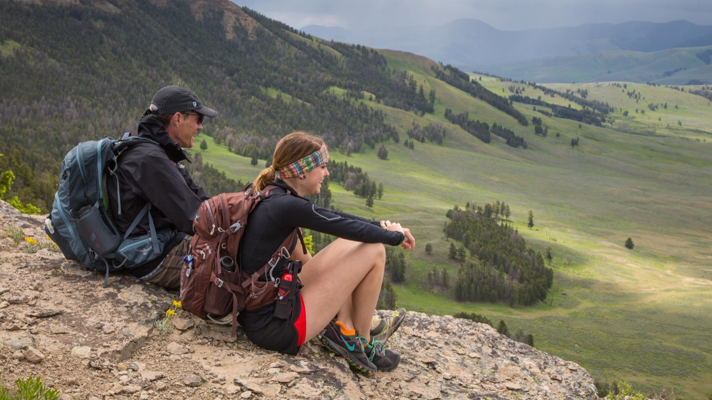
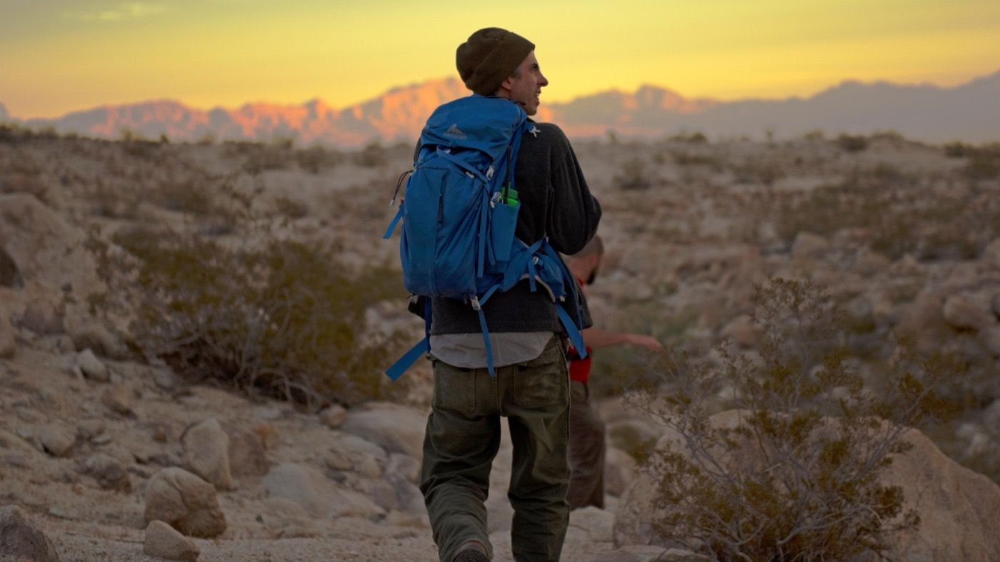

Every trail starts with a first step
Welcome to Trail Ready! This website will explore the basics of preparing for and enjoying a day hike. It is designed for beginners who want to learn about hiking gear, trail preparation, and useful resources.
Meet Matt
My name is Matt, and I am studying computer science. I enjoy being outdoors and have visited a number of national parks around the country, where I have spent time hiking. For this website, I am bringing together my studies and my interest in exploring the outdoors.
I am interested in hiking because I am an explorer at heart. Hiking gives me a way to discover different places and experience the landscapes of the national parks I visit. I chose hiking as the focus of Trail Ready so I can build a website around a subject that interests me while developing my web programming skills.
A little inspiration for the next trail
These National Park Service photos show the kinds of outdoor settings that make hiking worth exploring. They are public-source images, rather than photos from my own trips.


About this project
I am building this website for CSCI434 Web Programming. This homepage will serve as the starting point for my course portfolio. As the course progresses, I will expand the site with additional pages, photographs, and interactive features centered on hiking.
Explore hiking resources
- National Park Service — Trails & Hiking: explore hiking opportunities in national parks.
- U.S. Forest Service — Hiking: find information about preparing for a hike in national forests.
- Leave No Trace: learn about caring for outdoor spaces.